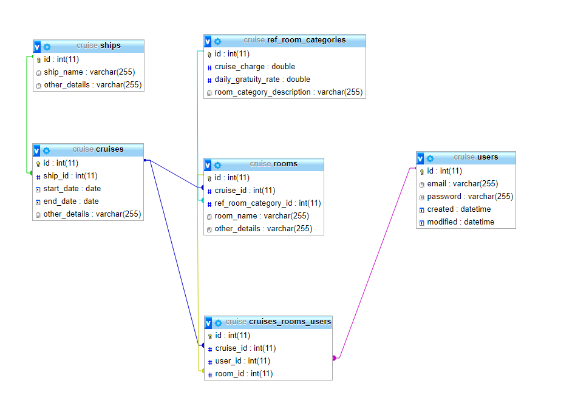
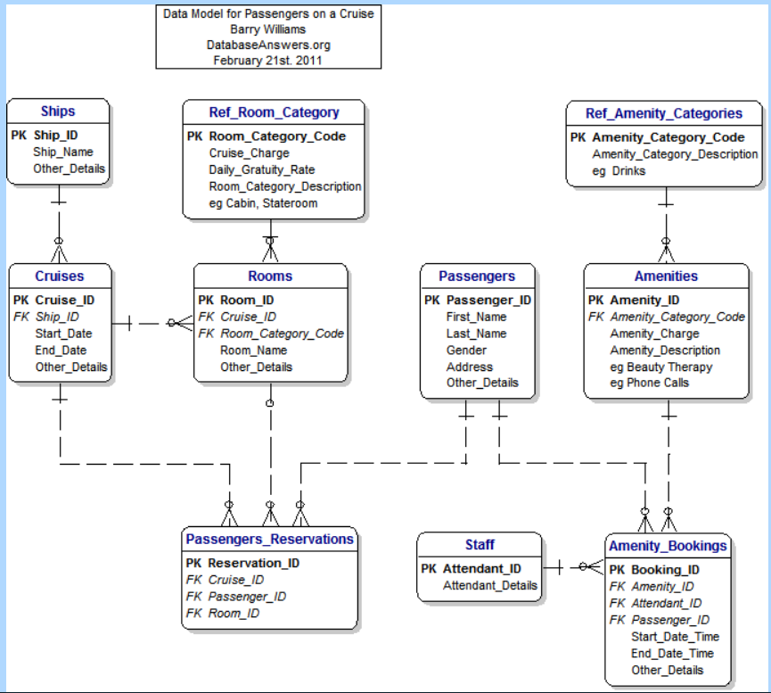

À propos
Choujaa Yassine
420-267 MO Développer un site Web et une application pour Internet. Automne 2017, Collège Montmorency.
https://github.com/CommitNeckRope/TP1_V001.git


lien vers le modele
étapes d'utilisation typiques
- aller sur http://localhost/TP1_V001/roomtype pour avoir accès a la monopage Ajax avec la lecture, la l'ajout et la suppretion en ajax. la modification ne fonctionne pas a 100%
- le routage admin et toutes ses fonctionnalitées sont disponnible en appuyant sur "Section admin en PHP" dans la bar de haut
- le bootsrap est fonctionnel sur les page roomtype et admin/roomtype mais il faut l'activée en mettant en commentaire "parent::initialize();" et en décommentant "$this->initializeUI();" dans le fichier appview
- en activant le boostrap, toutes page ne l'utilisant pas n'ont plus de theme. Pour le changer, désactiver bootsrap en faisant l'inverse de la dernière etape
- l'autocomplete est disponible sur "http://localhost/TP1_V001/rooms/add" sur le champ Roomtype
- les listes liées sont disponnibles sur "http://localhost/TP1_V001/cruises/add"